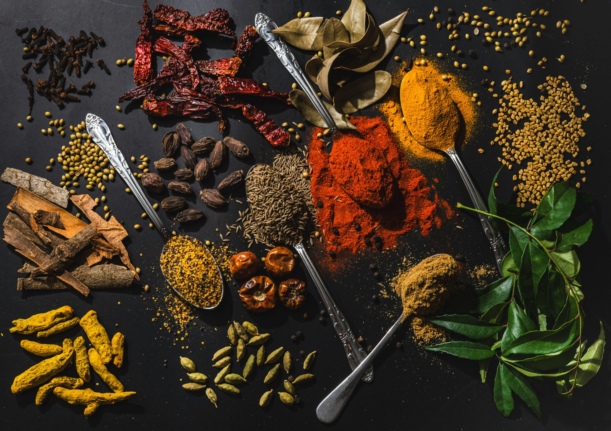
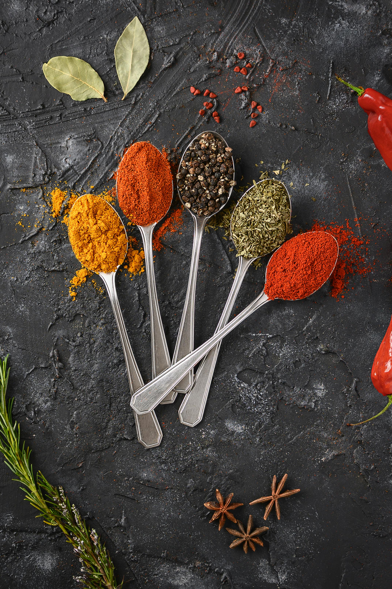
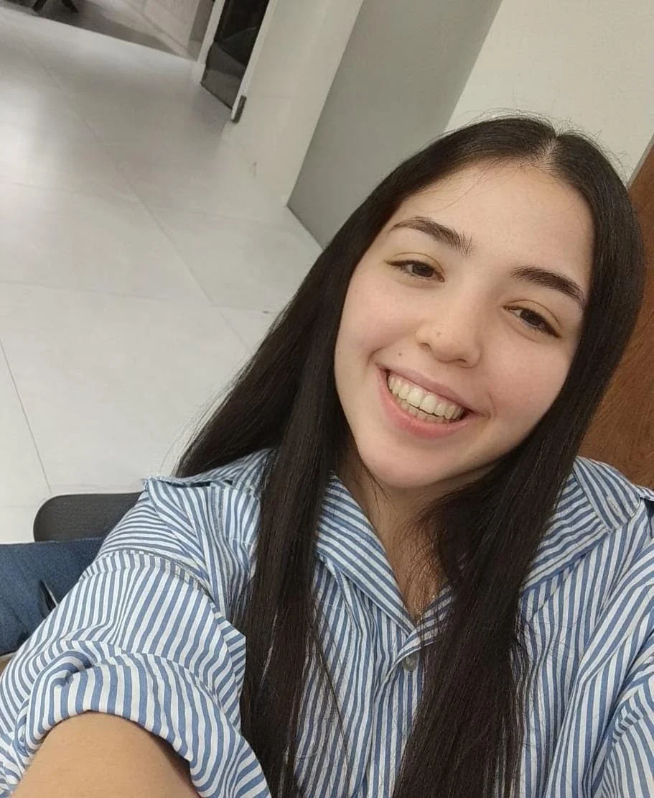

דניאל מ.
“ברגע שהכנסתי את תערובת הראס-אל-חנות לסיר – כל הבית הריח. תודה על הסבלנות והטיפים, חוויה של שירות.”
עוד
המשלוח הגיע מהר, האריזה איכותית, והכי חשוב – הטעם חד ומדויק. ממליץ מאוד.
המסע שלנו מתבל קהילות, מטבחים וסיפורים. כאן תמצאו את ההתחלה, את ההיום – וגם מה הלקוחות מספרים.
זה התחיל מדוכן קטן עם ריח של הל, כורכום ופפריקה שצבעה את הידיים. החלום היה להביא לאנשים תבלינים טריים באמת – ממגדלים שאנחנו מכירים בשמם, הנקלים וננפים ביד ונארזים באהבה. מהר הבנו שאנשים מבקשים לא רק טעם אלא חוויית מטבח פשוטה וטובה: טיפ קטן לכל סיר, תערובת נכונה בזמן הנכון וקצת אומץ לנסות.
עם השנים אספנו מתכונים של סבתות, סוחרים ושפים, למדנו איפה פלפל גדל טוב באמת, איך שומרים על טריות בלי טריקים, ואיך הופכים תערובת ל”חותמת טעם” של בית. זה הסיפור שלנו – סקרנות, עבודה נקייה והבטחה קטנה: כל שקית שנוגעת בסיר שלכם צריכה לעשות חיוך.


היום אנחנו רשת בוטיק צומחת עם מרכז קלייה וטחינה טריים, חנויות חוויה ומערך אונליין שמגיע לכל הארץ.
המטרה נשארה: להקל עליכם לבשל טעים, לחגוג פשטות ולהמשיך לחדש – בלי לוותר על המקורות והמסורת.
“ברגע שהכנסתי את תערובת הראס-אל-חנות לסיר – כל הבית הריח. תודה על הסבלנות והטיפים, חוויה של שירות.”
המשלוח הגיע מהר, האריזה איכותית, והכי חשוב – הטעם חד ומדויק. ממליץ מאוד.

“הקינמון שלכם זה סיפור אהבה. מאז שהתחלתי להשתמש – כל עוגת שמרים מרגישה מאפייה מקצועית.”
“תערובות מדויקות, מחירים הוגנים, ושירות של אנשים שאכפת להם. זה כל מה שצריך.”